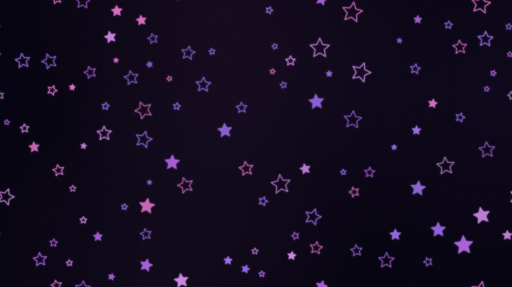
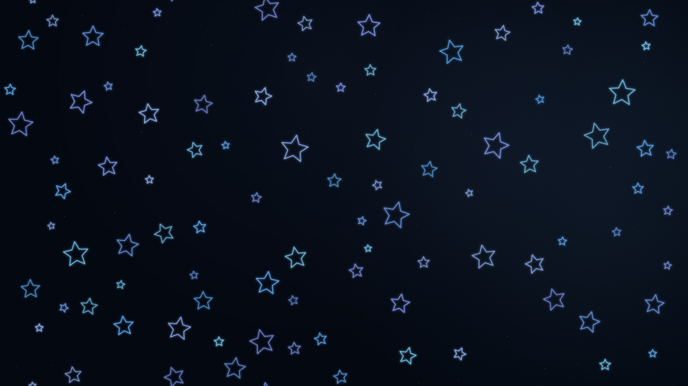
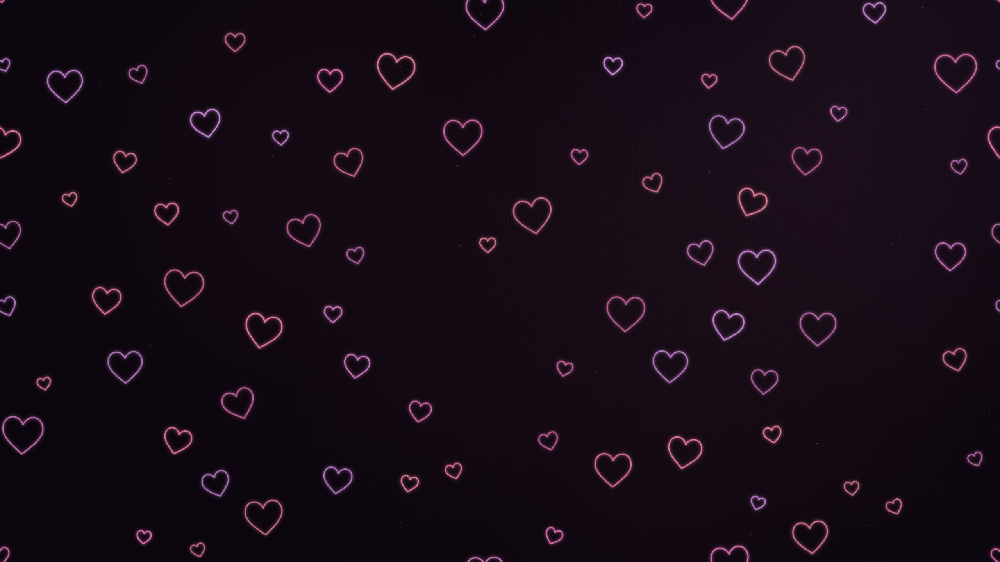
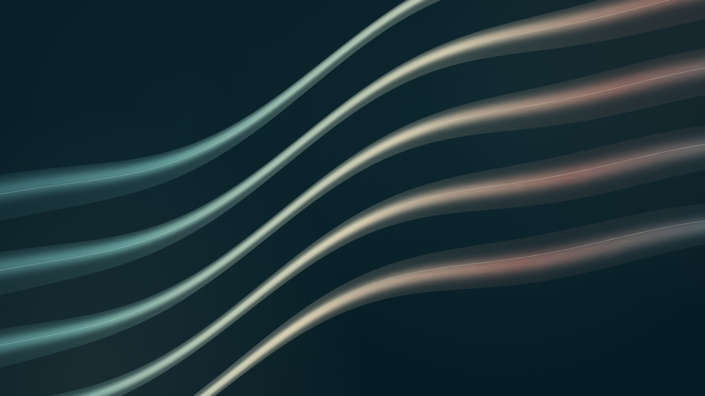
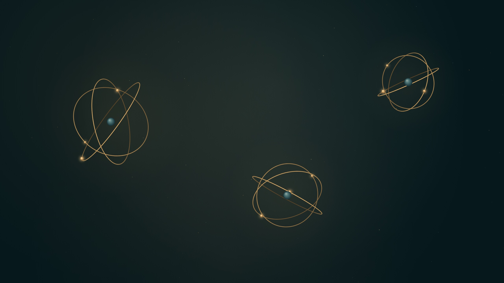

Открыть анимацию ↗Ultraviolet
Фиолетовые звёзды. Тихое мерцание и пространство между огнями.
Тихий свет, текучие формы и маленькие орбиты.
Выберите настроение своего экрана.

Открыть анимацию ↗Фиолетовые звёзды. Тихое мерцание и пространство между огнями.

Открыть анимацию ↗Холодный неоновый дождь. Чистые контуры и плавное движение.

Открыть анимацию ↗Тёплый розовый свет. Парящие сердца с мягким дыханием.

Открыть анимацию ↗Жидкий перламутр. Шёлковые складки цвета моря, жемчуга и меди.

Открыть анимацию ↗Янтарная механика. Подвижные орбиты и маленькие светящиеся спутники.